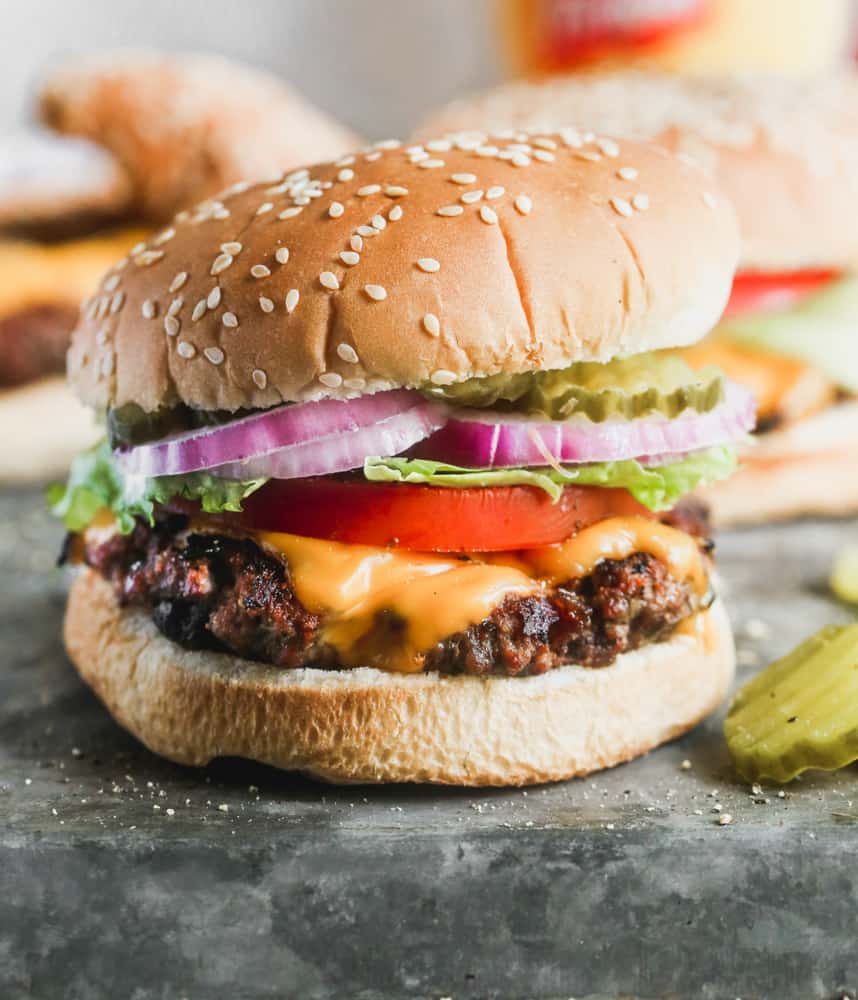

Juicy Burgers

Description
A very juicy burger. This juicy burger recipe is perfect for any party or get together event. So good that you will have plenty of people asking for seconds.
Ingredients
- 2 pounds ground beef
- 3/4 cup dry bread crumbs
- 1 egg
- 3 tablespoons evaporated milk
- 2 tablespoons Worcestershire sauce
- 2 cloves of minced garlic
- 1/8 teaspoon cayenne pepper
Steps
- Prepare the grill for a high heat.
- Mix the egg, bread crumbs, evaporated milk, ground beef, Worcestershire sauce, garlic, and cayenne pepper in a large bowl.
- Form eight burger patties from the mix in the previous step.
- Place the patties onto the grill for about five minutes per side until they lose the pink color.
- Plate the burgers and assemble them however you prefer.